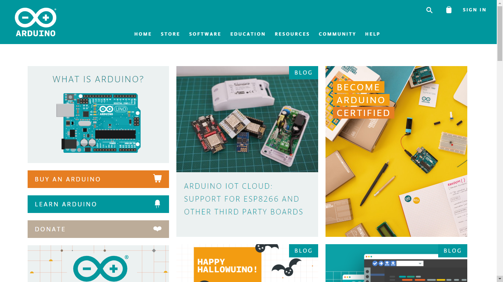
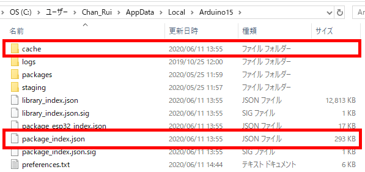
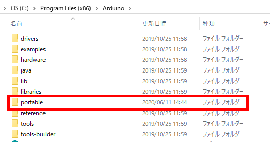

Arduino IDEが起動しない時の対処法
更新：2020/06/11

はじめに
2020/06/11現在、Arduino IDEが起動されない現象が多発している見たいなので、その対処法を調べてみました。
Arduino IDEが起動しない人が多発しているみたいなので、以下のファイルとフォルダを削除すると、起動することができます。
とあるサイトにて、Program Files内のArduinoフォルダの中に
Arduino IDEは起動しますが、ライブラリが全て使えない状態になりますので、
あまりオススメしません。
C:\Users\ユーザ名\AppData\Local\Arduino15\package_index.json C:\Users\ユーザ名\AppData\Local\Arduino15\cache

(Arduino IDEをインストールしていない人は
こちらの記事から)とあるサイトにて、Program Files内のArduinoフォルダの中に

portableというフォルダを作り、Arduino IDEを管理者で実行すると起動するとの情報がありますが、Arduino IDEは起動しますが、ライブラリが全て使えない状態になりますので、
あまりオススメしません。
関連記事
'.$rtitle.'
'; } } mysqli_free_result($result); mysqli_close($link); }else { print 'Error Establishing Database Connection'; } ?>
Tweet